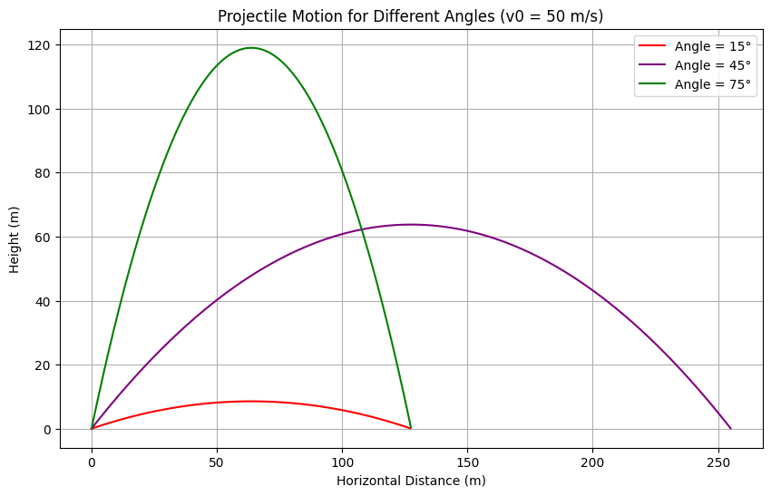
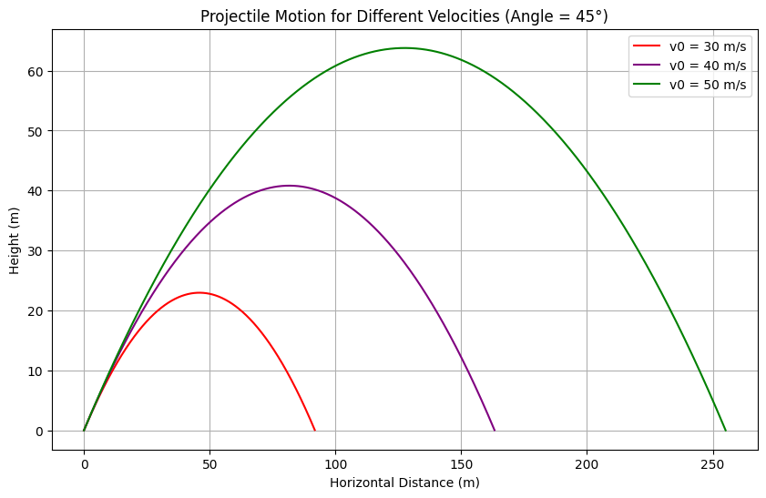
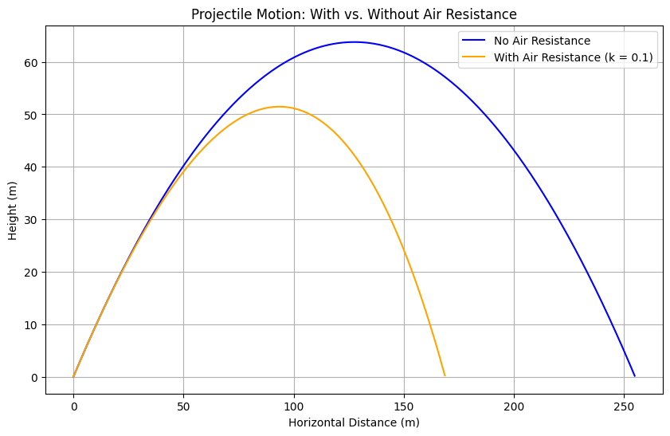

# Problem 1
# Theoretical Foundation
Derivation from Differential Equations
Projectile motion can be described using Newton’s second law. Assuming no air resistance initially, the only force is gravity acting downward. Define the coordinate system with x-axis horizontal and y-axis vertical.
Horizontal Motion (x-direction)
-
No acceleration in the x-direction:
d²x/dt² = 0 -
Initial velocity in x-direction:
v₀ₓ = v₀ * cos(θ) -
Integrate:
dx/dt = v₀ * cos(θ)
x(t) = (v₀ * cos(θ)) * t
Vertical Motion (y-direction)
-
Acceleration due to gravity g = 9.8 m/s² downward:
d²y/dt² = -g -
Initial velocity in y-direction:
v₀ᵧ = v₀ * sin(θ) -
Integrate:
dy/dt = v₀ * sin(θ) - g * t
y(t) = (v₀ * sin(θ)) * t - (1/2) * g * t²
Range Calculation
The projectile hits the ground when y(t) = 0:
(v₀ * sin(θ)) * t - (1/2) * g * t² = 0
t * (v₀ * sin(θ) - (1/2) * g * t) = 0
Solutions:
- t = 0 (start)
- t = (2 * v₀ * sin(θ)) / g (time of flight)
Substitute t into x(t):
R = (v₀ * cos(θ)) * (2 * v₀ * sin(θ)) / g
= (2 * v₀² * sin(θ) * cos(θ)) / g
= (v₀² * sin(2θ)) / g
Analysis of the Range
Range vs. Angle of Projection
The range formula:
R = (v₀² * sin(2θ)) / g
Maximum range occurs at θ = 45°.
Example:
v₀ = 50 m/s, θ = 45°
R = (2500 * sin(90°)) / 9.8 ≈ 255 m
Other Angles:
- θ = 15° → R ≈ 91.8 m
- θ = 75° → R ≈ 163 m
Effect of Initial Velocity
| v₀ (m/s) | θ (°) | Range (m) |
|---|---|---|
| 30 | 45 | 91.8 |
| 40 | 45 | 163 |
| 50 | 45 | 255 |
Range increases with square of v₀.
Effect of Gravitational Acceleration
If g increases, range decreases
(e.g., on a planet with stronger gravity).
Practical Applications
- Sports: Optimizing the launch angle in golf, javelin, etc.
- Engineering: Designing projectile systems and launchers.
- Astrophysics: Modeling satellite launches
Limitations: - Air resistance reduces range and alters trajectory - Uneven terrain or wind affects the projectile's path
Implementation: Projectile Motion Simulation
Plot 1: Trajectories for Different Angles (15°, 45°, 75°) at 50 m/s
Below is the Python code to generate a plot similar to part (a) of the image.
import numpy as np
import matplotlib.pyplot as plt
# Constants
g = 9.8 # m/s^2
v0 = 50 # m/s
angles = [15, 45, 75] # degrees
colors = ['red', 'purple', 'green']
# Time array for simulation
t_max = 2 * v0 * np.sin(np.radians(max(angles))) / g
t = np.linspace(0, t_max, 1000)
plt.figure(figsize=(10, 6))
for angle, color in zip(angles, colors):
theta = np.radians(angle)
# Positions
x = v0 * np.cos(theta) * t
y = v0 * np.sin(theta) * t - 0.5 * g * t**2
# Stop when y <= 0 (ground)
mask = y >= 0
plt.plot(x[mask], y[mask], label=f'Angle = {angle}°', color=color)
plt.title('Projectile Motion for Different Angles (v0 = 50 m/s)')
plt.xlabel('Horizontal Distance (m)')
plt.ylabel('Height (m)')
plt.legend()
plt.grid(True)
plt.show()

Plot 2: Trajectories for Different Velocities (30, 40, 50 m/s) at 45°
# Constants
g = 9.8 # m/s^2
v0s = [30, 40, 50] # m/s
angle = 45 # degrees
colors = ['red', 'purple', 'green']
# Time array
t_max = 2 * max(v0s) * np.sin(np.radians(angle)) / g
t = np.linspace(0, t_max, 1000)
plt.figure(figsize=(10, 6))
for v0, color in zip(v0s, colors):
theta = np.radians(angle)
x = v0 * np.cos(theta) * t
y = v0 * np.sin(theta) * t - 0.5 * g * t**2
mask = y >= 0
plt.plot(x[mask], y[mask], label=f'v0 = {v0} m/s', color=color)
plt.title('Projectile Motion for Different Velocities (Angle = 45°)')
plt.xlabel('Horizontal Distance (m)')
plt.ylabel('Height (m)')
plt.legend()
plt.grid(True)
plt.show()

Plot 3: Projectile Motion With and Without Air Resistance
Now, let’s simulate projectile motion with air resistance. Air resistance introduces a drag force proportional to velocity: \( F_{\text{drag}} = -k v \).
Differential Equations with Air Resistance
- \( x \)-direction: \( m \frac{d^2 x}{dt^2} = -k \frac{dx}{dt} \)
- \( y \)-direction: \( m \frac{d^2 y}{dt^2} = -mg - k \frac{dy}{dt} \)
We’ll solve these numerically using the Euler method.
# Constants
g = 9.8
v0 = 50
angle = 45
theta = np.radians(angle)
k = 0.1 # drag coefficient
m = 1 # mass in kg
dt = 0.01 # time step
t_max = 10
# Initial conditions
vx = v0 * np.cos(theta)
vy = v0 * np.sin(theta)
x, y = 0, 0
x_no_air, y_no_air = 0, 0
t = 0
# Lists to store trajectories
x_traj, y_traj = [x], [y]
x_no_air_traj, y_no_air_traj = [x_no_air], [y_no_air]
# Euler method simulation
while y >= 0 or y_no_air >= 0:
# With air resistance
ax = -k * vx / m
ay = -g - k * vy / m
vx += ax * dt
vy += ay * dt
x += vx * dt
y += vy * dt
# Without air resistance
x_no_air = v0 * np.cos(theta) * t
y_no_air = v0 * np.sin(theta) * t - 0.5 * g * t**2
# Append to trajectories
if y >= 0:
x_traj.append(x)
y_traj.append(y)
if y_no_air >= 0:
x_no_air_traj.append(x_no_air)
y_no_air_traj.append(y_no_air)
t += dt
# Plot
plt.figure(figsize=(10, 6))
plt.plot(x_no_air_traj, y_no_air_traj, label='No Air Resistance', color='blue')
plt.plot(x_traj, y_traj, label='With Air Resistance (k = 0.1)', color='orange')
plt.title('Projectile Motion: With vs. Without Air Resistance')
plt.xlabel('Horizontal Distance (m)')
plt.ylabel('Height (m)')
plt.legend()
plt.grid(True)
plt.show()

Discussion on Limitations
- Idealized Model: Assumes no air resistance, flat terrain, and constant gravity.
- Air Resistance: Reduces range and height, as shown in the plot.
Conclusion
This analysis demonstrates the dependence of a projectile’s range on the angle of projection, with a maximum at 45°. Variations in initial velocity and air resistance significantly affect the trajectory, as visualized in the plots. These principles apply to diverse fields, from sports to engineering, though real-world factors like drag must be considered for accurate modeling. Kepler’s Laws and Orbital Mechanics